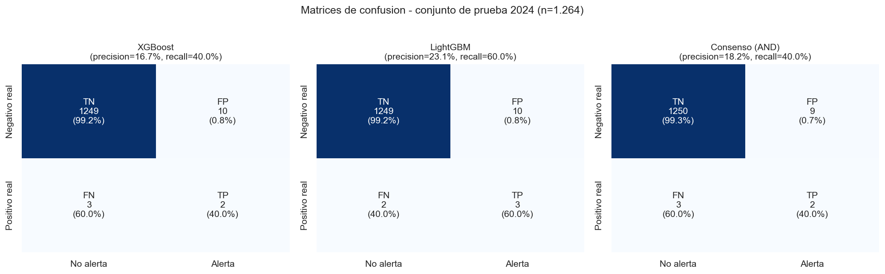
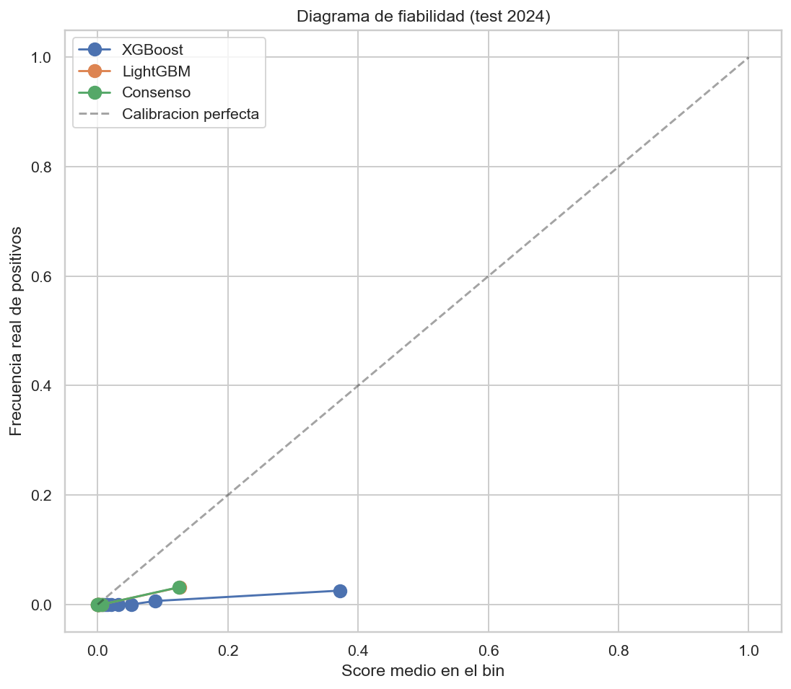
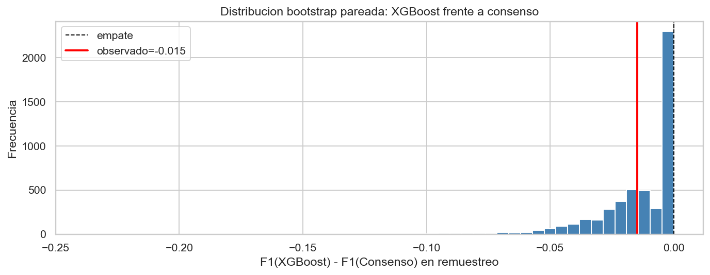
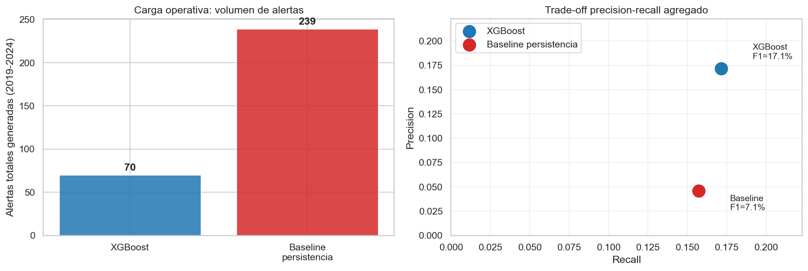
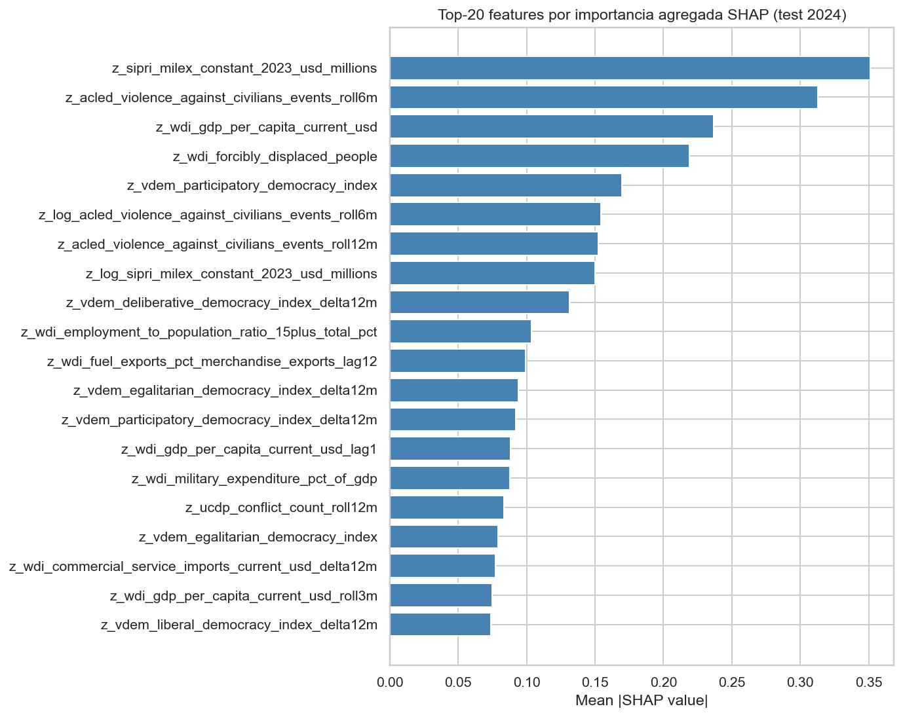
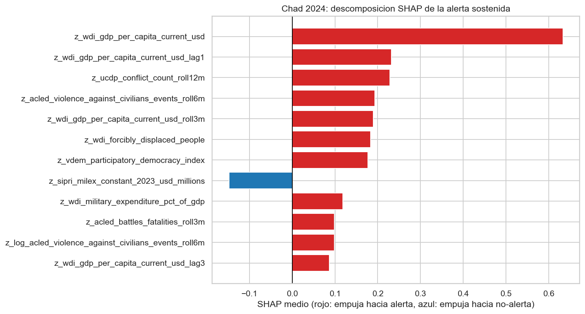
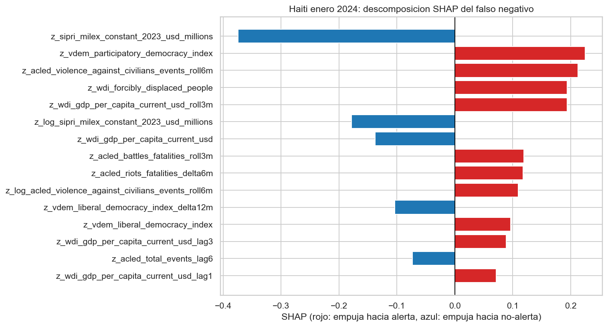
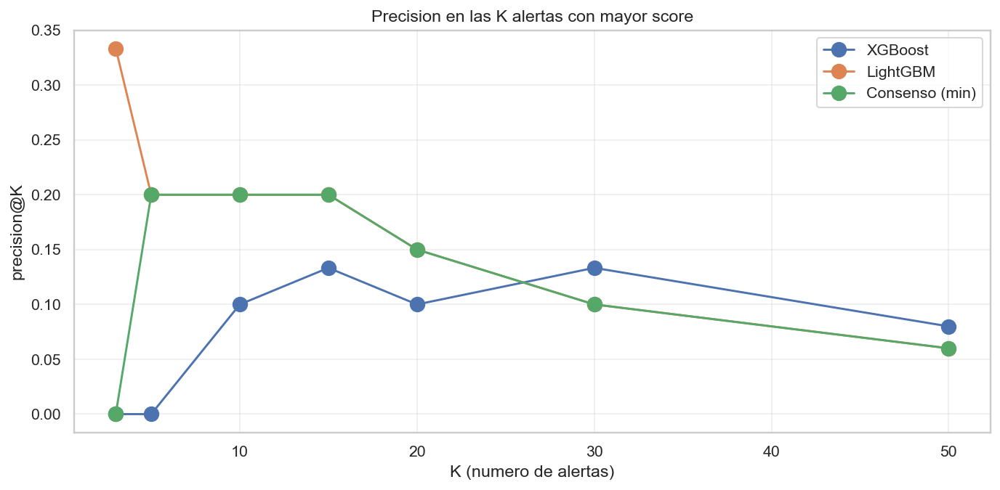
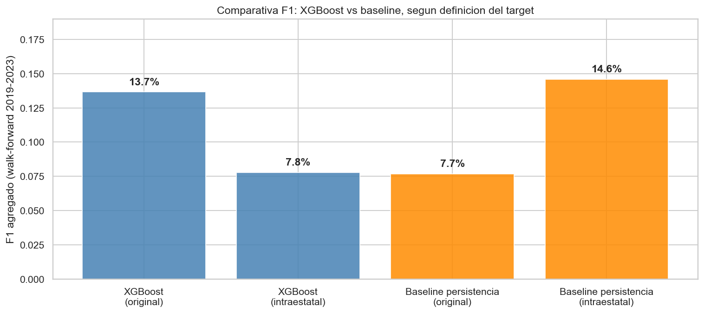

Introduccion tecnica
El sistema combina tres modelos de prediccion entrenados sobre indicadores mensuales pais-mes (UCDP, ACLED, WDI, V-Dem, SIPRI) para anticipar transiciones de paz a conflicto armado a un horizonte de 3 meses.
- XGBoost: modelo principal, optimizado con validacion walk-forward 2019-2024.
- LightGBM: modelo secundario, entrenado de forma independiente para validacion cruzada.
- Consenso (AND): alerta solo cuando XGBoost y LightGBM coinciden.
- Baseline de persistencia: predice conflicto si lo hubo en los 12 meses previos (referencia operativa).
Definiciones de target: original = onset de cualquier conflicto UCDP (incluido interestatal) en los proximos 3 meses; intraestatal = onset intraestatal (UCDP type 3) + intraestatal internacionalizado (type 4) en los proximos 3 meses.
KPIs de test (2024)
Precision, recall y F1 con IC Wilson 95% (precision, recall) y bootstrap 95% (F1). Test 2024-01 a 2024-09.
Walk-forward 2019 - 2024
XGBoost frente a baseline de persistencia.
Comparativas
XGBoost vs Baseline por definicion de target
original: cualquier tipo UCDP, incluido interestatal. intraestatal: UCDP/PRIO type 3 intraestatal + type 4 internacionalizado; excluye type 2 interestatal (ej. USA/UK en Yemen 2024). Ventana: 3 meses adelantados.
Precision@k
Precision en el top-k de paises ordenados por score (anual). Util para priorizacion operativa.
Explicabilidad global (SHAP)
Top 25 variables por |SHAP medio absoluto|. Color: rojo = empuja a alerta, azul = empuja a no-alerta (segun signo del SHAP medio).
Simulador de umbral (XGBoost)
Recalcula en vivo TP, FP, FN, TN y metricas sobre las predicciones de XGBoost 2024 al cambiar el umbral. Por defecto 0.76 (el operativo del modelo).
Alertas resultantes
| Pais | Periodo | Score | Target |
|---|
Tabla pais-mes
| Pais | Periodo | XGBoost | LightGBM | Consenso | Alerta XGB | Alerta LGBM | Alerta cons. | Ground truth |
|---|
Validacion con casos reales del periodo
Durante 2024, 4 paises transitaron de un estado de paz a un estado de conflicto armado activo segun UCDP/PRIO. Esta seccion documenta como el sistema se comporto frente a estos casos en los meses previos al onset, lo que constituye una validacion ex-post del comportamiento del modelo.
Graficos de apoyo
Resultados estaticos producidos por el notebook. Click para ampliar.








